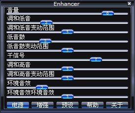

|
完全控制声效！ 版本 0.17 （2001年10月20日）
 此插件程序通过补偿连接到你个人电脑上的音频系统的失帧的音频文件使声音变得更加丰满动听。若你拥有非常棒的的声效系统，此声效插件程序通常能让声音变得更加完美。 音量：调整声音放大的最大效果。放大范围从 -20dB 到 +20dB。若声音太大，则会自动调整到合适的程度。此时，你会发现在音量区域最大数值处和当前数值处都会出现滑杆。（若你希望获得当前放大的准确数值，你只需将当前的显示数值乘上4后再减去20即可） 调和低音：使低音变得更低。特别为大扬声器（或是高保真耳脉）而设计。是对低音的高效扩展。通过高度调和，你甚至可以听到下低音。若含有低频，调和低音通过对声音的压缩放大使低音清晰明朗。 调和低音变动范围：用以调整调和低音的添加或放大的程度。 低音鼓：低音鼓动态改变声音的效果，尤其是鼓声的效果。 低音鼓变动范围：改变低音鼓的发声频率以将扬声器发挥到最佳效果。 若你使用耳脉，你可以滑动滑杆到合适的位置。 干信号：此为原音控制选项。你可以降低数值以获得更佳的低音和高音效果。 调和高音：通过添加高低调和音频放大高音部分。这将使声音变得丰满。 调和高音变动范围：用以调整调和高音的反馈频率。低数值主要作用于波形效果，高数值主要作用于人声。将此滑杆的数值调高将有利于比特率较低的压缩音频。 环境音效：调整环境音效的效果强度。此功能基于 Schroeder/Moorer 混音模型。 环境音效变动范围：用以调整声音反射的长度，即环境音效的涉及范围。
电源：你可以停止声效处理以保留系统资源（或用以比较声效处理前后的不同效果）。 增强：用以增强或减弱声音的幅度。 预设：你可在所显示的选择面板中管理（载入、保存或删除）声效处理预设。 帮助：显示此帮助信息... 关于：提供关于 Enhancer 的版本信息以及快速访问网页... 若您用鼠标右键点击 Enhancer 的控制面板，你将获得一个上下文菜单。 注意：
法律声明： 对于使用或错误使用而导致的数据损坏或丢失，本人不负任何责任。
|